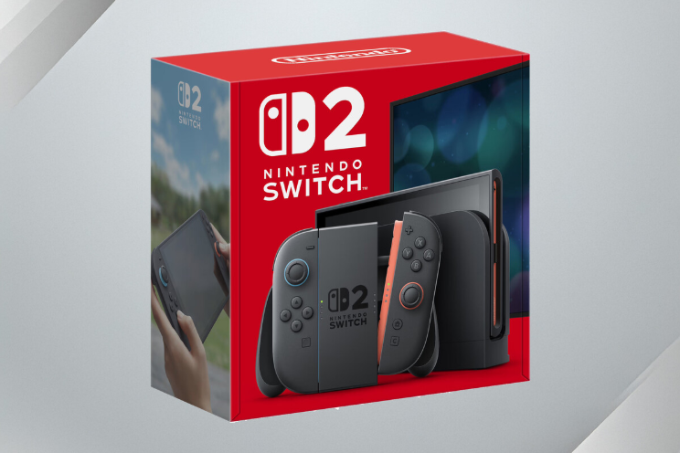

La Switch 2 viene con un protector que muchos quitaríamos sin pensarlo. Nintendo tiene una advertencia para los usuarios
Uno de los primeros gestos que solemos hacer al estrenar un nuevo dispositivo es retirar el protector de pantalla que viene de fábrica. Es casi un acto reflejo: quitar la película brillante, colocar un cristal templado más robusto y, si se trata de un móvil, enfundarlo para protegerlo de golpes. Pero con la Nintendo Switch 2, esa costumbre puede jugar en contra. Esta vez, lo que parece un simple film protector no está ahí por estética ni por cortesía.
Nintendo ha dejado claro que no conviene retirarlo. Y lo ha hecho incluso antes del lanzamiento oficial de la consola, previsto para el próximo 5 de junio. El aviso aparece en el manual de seguridad que acompañará al dispositivo en su llegada al mercado europeo. El documento, ya disponible en la web oficial, incluye una advertencia muy clara: la pantalla viene cubierta con una película diseñada para evitar que se dispersen fragmentos en caso de rotura. La frase exacta, en español, es directa: “No la retires”.
Esto puede sonar extraño si pensamos en otros productos tecnológicos. Después de todo, llevamos años acostumbrándonos a que ese tipo de película sea algo provisional, casi un envoltorio. Pero aquí no. En este caso hablamos de una capa con una característica de seguridad concreta, similar a la que ya incorporaba la Nintendo Switch OLED. En aquel dispositivo tenía el mismo objetivo: prevenir cortes y evitar que salten trozos.
Las consolas anteriores no contaban con esta protección. La Switch original y la Lite usaban pantallas de plástico y, por tanto, no presentaban ese riesgo. Pero el cambio a pantallas de vidrio ha obligado a Nintendo a tomar medidas. No se trata solo de un cambio en el material, es una decisión que impacta en el uso, en la seguridad y en cómo debemos tratar el dispositivo nada más sacarlo de la caja.
Y no es algo exclusivo de Nintendo. En el mundo de los smartphones ya hemos vivido una situación similar. El ejemplo más recordado fue el del Galaxy Fold original de Samsung. Aquella primera hornada de móviles plegables incluía una capa que muchos confundieron con un simple protector. Cuando lo retiraron, algunos experimentaron problemas. No todo lo que parece un accesorio lo es. A veces, forma parte del propio dispositivo.
Volviendo a la Switch 2, el consejo es claro: conviene no tocar lo que no sepamos exactamente para qué sirve. Y conviene aún más leer las instrucciones. Porque esta consola, que costará 469,99 euros (IVA incluido), no es precisamente una inversión barata (al igual que sus juegos). Arriesgarse a estropear la pantalla por un gesto automático y evitable no merece la pena.
Noticias Relacionadas

China se perfila como líder en tecnología médica: la UE está a un paso de vetarla en sus grandes licitaciones, según Reuters
El mercado chino de dispositivos médicos crece con apoyo estatal La UE ha respaldado restringir licitaciones públicas a empresas chinas.
Leer más
España vuelve al podio con un dato que enciende alarmas: ya es el segundo país más atacado del mundo por cibercriminales
Secure&IT alerta sobre una exposición creciente por razones económicas, geográficas y políticas El Gobierno trabaja en un “escudo digital” para reforzar la ciberseguridad desde distintos frentes.
Leer más